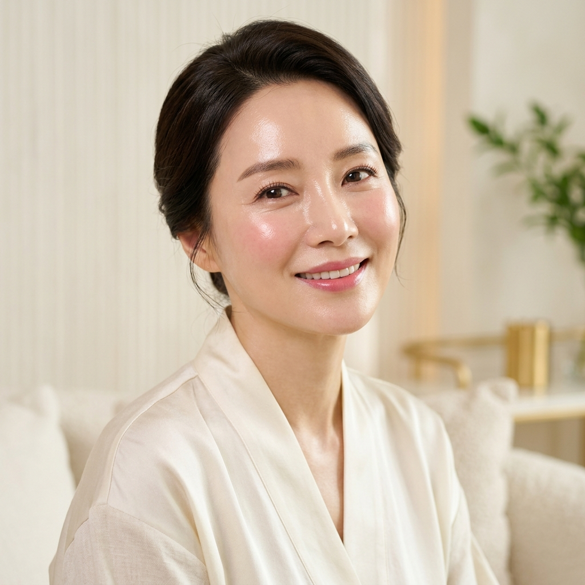
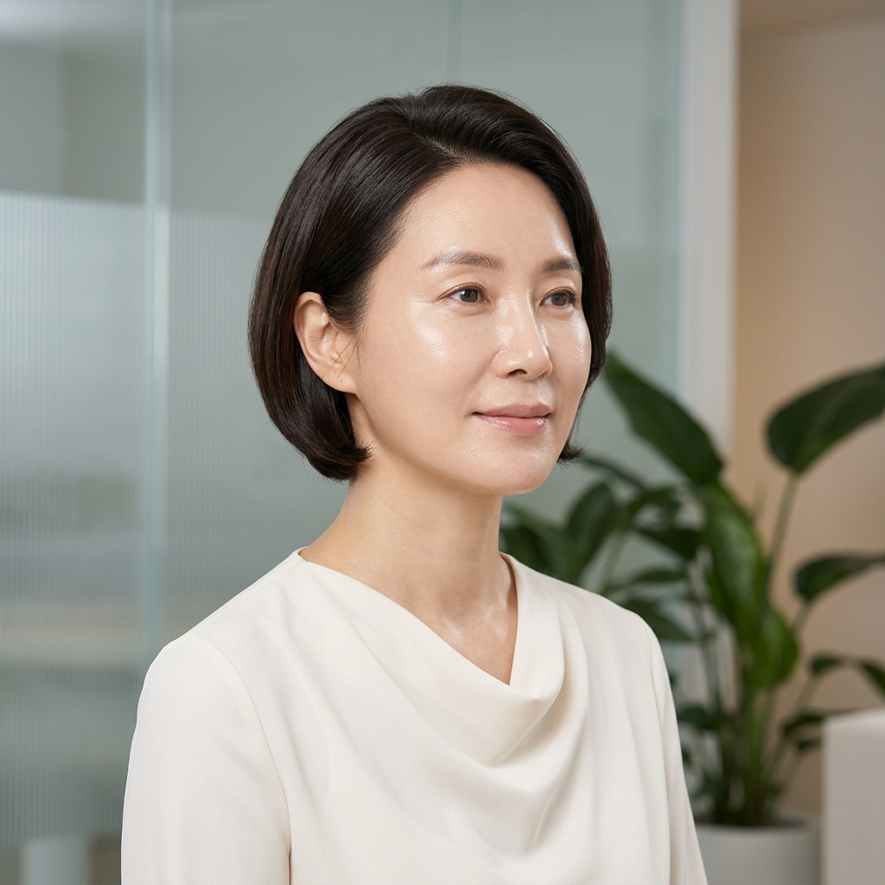

Healing Essence
Calm the Skin. Support Recovery. Rebuild Confidence.
Some skin does not need “more.” It needs recovery. Healing-focused Korean skin boosters are designed to support compromised skin barriers, redness-prone skin, acne recovery, texture irregularities, stressed or sensitized skin, and post-procedure recovery.
This category became globally popular through Korean regenerative aesthetic medicine, where the emphasis is often placed on skin health and restoration before aggressive cosmetic enhancement.
“My skin looks healthier, my skin feels stronger, I look rested... Very Seoul. Very intentional.”
Hydration & Glow
Deep Hydration. Glass Skin Energy.
Some people moisturize. Korean clinics engineer hydration. Hydration-focused skin boosters are designed to support long-lasting hydration, smoother texture, radiant skin appearance, elasticity, makeup performance, and crepey or dehydrated skin appearance.
These treatments often utilize advanced hyaluronic acid technologies designed for refined hydration distribution rather than heavy facial contouring. Translation: dewiness without looking “filled.”
- • Dull skin & Dry Texas skin
- • Early fine lines & Tired skin
- • Event prep & Bridal glow


Collagen Stimulation
Structure. Elasticity. Long-Term Skin Support.
In modern Korean aesthetics, collagen support is treated like retirement investing. Small deposits now. Better structure later.
Collagen-focused skin quality boosters are designed to support skin firmness, elasticity, structural support, fine lines, acne scar appearance, thinning skin appearance, and long-term skin quality maintenance.
The Korean aesthetic philosophy typically prioritizes:
- • Restraint over exaggeration
- • Skin quality over overfilling
- • Balance over dramatic change
Dermal Matrix
The New Frontier of Korean Skin Architecture.
This category is where Korean regenerative aesthetics becomes exceptionally advanced. Dermal matrix-focused boosters are designed to support the extracellular matrix (ECM) — the structural environment surrounding collagen, elastin, hydration, and skin integrity.
Think of it as: the infrastructure beneath healthy-looking skin. In Korea, ECM-focused aesthetics have become increasingly popular because they align with a long-term skin health philosophy of not simply making skin appear tighter today but supporting healthier skin behavior over time.
Very K-Beauty. Very skin-intelligent.
